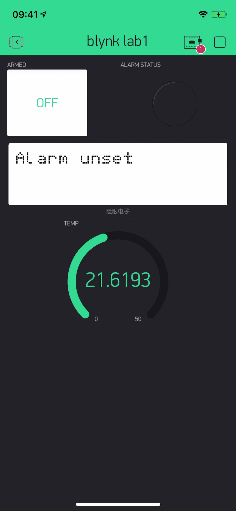

Blynk
The Blynk IOT application was used in the case of this Intruder alarm system to display relevant simple information to the end user. Also using this app the user can set the alarm. 
Example video
See a video below showing the usage of the blynk application
Should your browser not support HTML5 video, here is a link to the video instead.